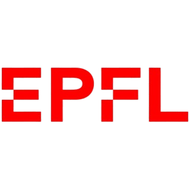
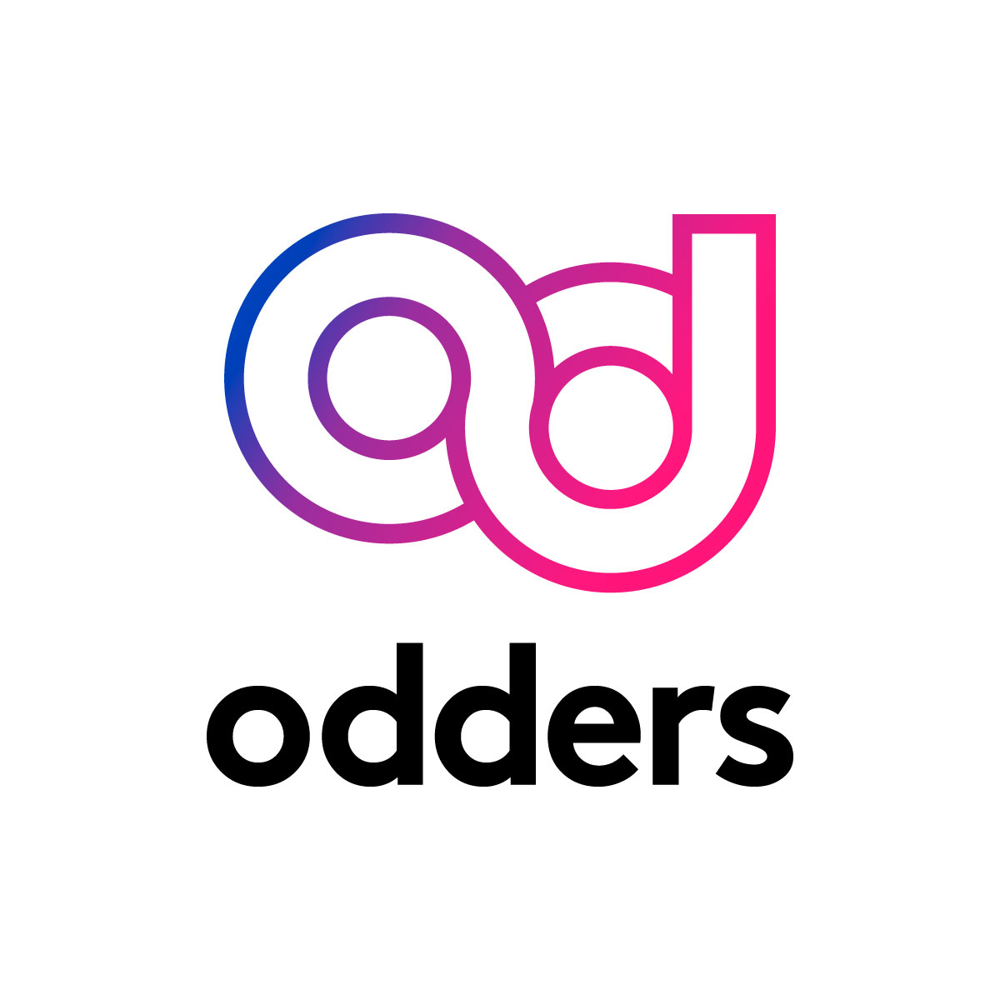

NASA STEM Enhancement in Earth Science
Intern
May - Aug 2024
In 2024, I applied to the NASA STEM Enhancement in Earth Science program and was accepted to the Earth Systems Explorers group as part of the top 10% of applicants to the program. With my group, I explored how we could apply machine learning techniques in conjunction with land cover data to predict land surface temperature, and thus improve our understanding of urban heat islands (UHI) in the United States and abroad.
- Engineered XGBoost ML model predicting land surface temperature from multispectral land cover data.
- Applied regularization and feature engineering to reduce overfitting, improving model generalization.
- Processed and cleaned 1100 satellite images for model training, creating a high-quality dataset for model training.
- Gave technical presentation at the NASA SEES Symposium, strengthening skills in scientific communication.

Laboratory of Artificial Chemical Intelligence @ EPFL
Research Intern
Feb 2024
In 2024, I was selected to represent my school in the "Science & Jeunesse" research program, where I was mentored by a PhD candidate in the Laboratory of Artificial Chemical Intelligence (LIAC) to pursue a mini-research project of my own. I learned about the principles of machine learning, and my learnings throughout the week culminated in the development of a Random Forest machine learning model created to predict the oxidation states of transition metals when used as catalysts in a specific reaction. The aim was to reach a level of accuracy where time-consuming, expensive wet lab tests could be replaced by computational models that could give insight into the behavior and characteristics of metals that may be promising for a given reaction.
- Collaborated with PhD researcher to design an ML model predicting the oxidation states of transition metal catalysts using chemical structure data.
- Applied supervised learning techniques to large chemistry datasets, employing feature extraction methods for improved model performance.
- One of five interns selected to present project and research outcomes at the Adolphe Merkel Institute, strengthening technical communication ability.

OddersLab
Marketing Intern
Jan 2024 — Apr 2024
I interned with the marketing department of OddersLab, a virtual reality experience developer. We investigated one of OddersLab's main target market demographics of interest, and developed engagement strategies to both improve reach and retention specifically for their Les Mills experience. We presented our findings back to the department and were ultimately selected as the best intern group of that session.
- Conducted target market research for the OddersLab Les Mills XR Dance experience
- Developed optimal engagement strategy to promote Les Mills Dance experience
- Presented findings to employees and gave advice regarding strategies to implement proposed solutions